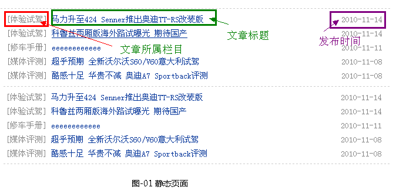
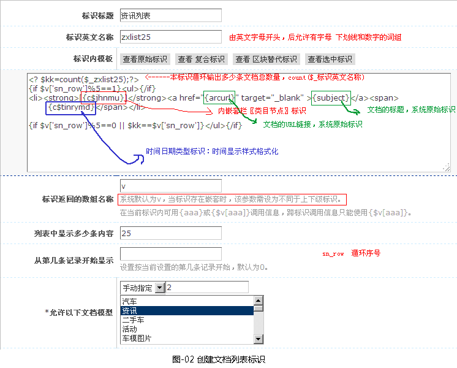
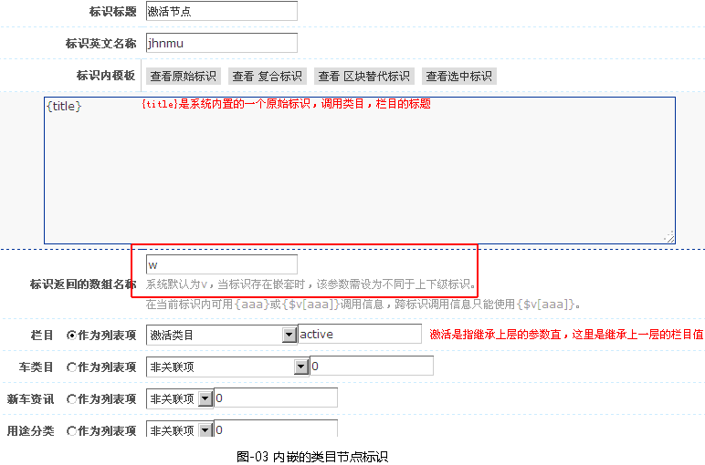
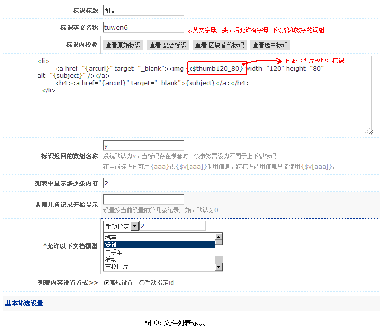
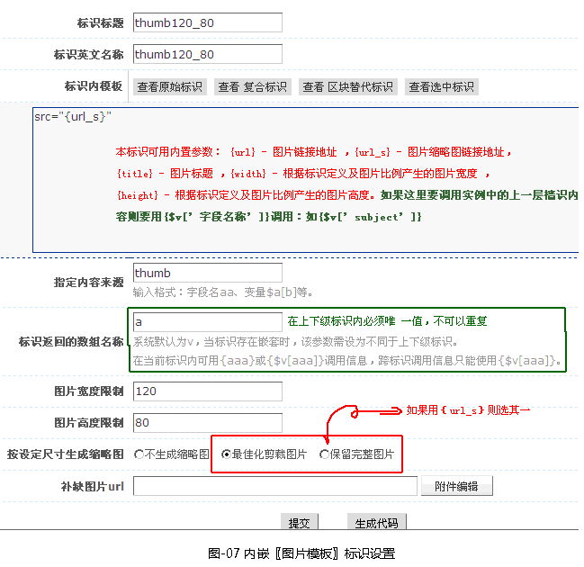
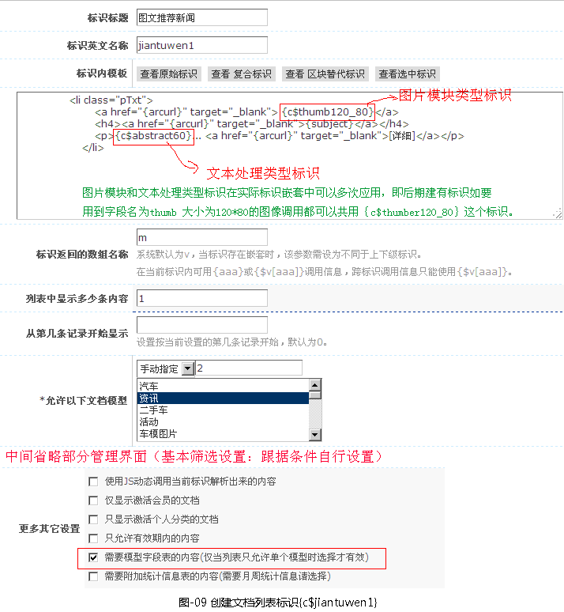
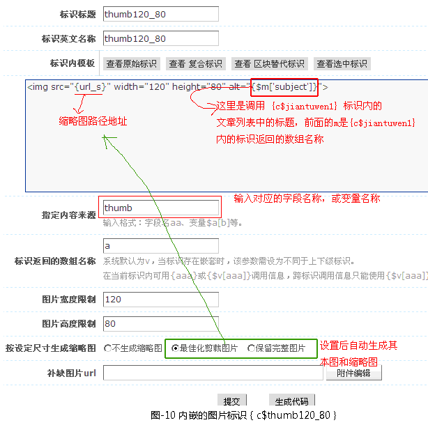

- 案例一：文字列表 （文档列表、类目节点及日期的调用）
-
文字列表调用有以下几个步骤:
1、先看一下静态代码的结构，如图-01所示。

html静态代码
<ul><li><strong>[案例]</strong><a target="_blank" href="http://auto.08cms.com/html/kanche/20101225/207366_1.html">2010广州车展 四款首发全新中级车导购</a><span>2010-12-25</span></li>
<li><strong>[人群与用途]</strong><a target="_blank" href="http://auto.08cms.com/html/kanche/20101225/207364_1.html">铁二期部分线路开通试运营</a><span> 2010-12-25</span></li>
<li><strong>[体验试驾]</strong><a target="_blank" href="http://auto.08cms.com/html/kanche/20101206/86144_1.html">贺中关村店试营业 捷亚泰宝来8.98万起</a><span>2010-12-06</span></li>
<li><strong>[体验试驾]</strong><a target="_blank" href="http://auto.08cms.com/html/kanche/20101122/1462_1.html">家轿新领袖 PCauto静态评测东风标致408</a><span> 2010-11-22</span></li>
<li><strong>[体验试驾]</strong><a target="_blank" href="http://auto.08cms.com/html/kanche/20101115/1458_1.html">上海火灾遇难人数上升至58人</a><span> 2010-11-15</span></li>
</ul> <ul><li><strong>[体验试驾]</strong><a target="_blank" href="http://auto.08cms.com/html/kanche/20101114/1452_1.html">马力升至424 Se版</a><span> 2010-11-14</span></li>
<li><strong>[体验试驾]</strong><a target="_blank" href="http://auto.08cms.com/html/kanche/20101114/1451_1.html">科鲁兹两厢版海外路试曝光 期待国产</a><span> 2010-11-14</span></li>
<li><strong>[修车手册]</strong><a target="_blank" href="http://auto.08cms.com/html/kanche/20101111/879_1.html">eeeeeeeeeeee</a><span> 2010-11-11</span></li>
<li><strong>[媒体评测]</strong><a target="_blank" href="http://auto.08cms.com/html/kanche/20101108/877_1.html">超乎预期 全新沃尔沃S60/V60意大利试驾</a><span> 2010-11-08</span></li>
<li><strong>[媒体评测]</strong><a target="_blank" href="http://auto.08cms.com/html/kanche/20101108/876_1.html">酷感十足 华贵不减 奥迪A7 Sportback评测</a><span> 2010-11-08</span></li>
</ul>
2、创建文档列表标识{c$zxlist25}，如图-02所示。

其中，内嵌的类目节点标识{c$jhnmu}，如图-03所示。

时间日期类型标识，如图-04所示。
3、将{c$zxlist25}标识代替静态模板上的HTML即可。
html静态代码：<ul> {c$zxlist25} </ul>
1、先看一下静态代码的结构，如图-05所示。
html静态代码
<ul class="pList clearfix"> <li><a target="_blank" href="http://auto.08cms.com/html/kanche/20101111/1121_1.html"><img width="120" height="80" alt="" src="http://auto.08cms.com/userfiles/image/20101117/17095252eb3e0cb3261816_120_80.jpg"></a> <h4><a target="_blank" href="http://auto.08cms.com/html/kanche/20101111/1121_1.html">英特尔WIDI打通电视笔记本</a></h4> </li>
<li><a target="_blank" href="http://auto.08cms.com/html/kanche/20101111/1120_1.html"><img width="120" height="80" alt="" src="http://auto.08cms.com/userfiles/image/20101127/27093518d55b8a433d7457_120_80.jpg"></a> <h4><a target="_blank" href="http://auto.08cms.com/html/kanche/20101111/1120_1.html">浙江组团来京招揽高端人才</a></h4> </li>
</ul> 2、创建文档列表标识{c$tuwen6}，如图-06所示。

其中，文档列表标识{c$tuwen6}内嵌套的图片标识{c$thumb120_80}，如图-07所示。

3、将实例中的模板静态代码改成<ul class="pList clearfix"> {c$tuwen6} </ul>
1、先看一下静态代码的结构，如图-08所示。
html静态代码
<ul class="tList"> <li class="pTxt"> <a target="_blank" href="http://auto.08cms.com/html/kanche/20101111/1160_1.html"> <img width="120" height="80" alt="" src="http://auto.08cms.com/userfiles/image/20101116/16141721438b5036f60259_120_80.jpg"></a> <h4><a target="_blank" href="http://auto.08cms.com/html/kanche/20101111/1160_1.html">微软张亚勤：天才的蜕变</a></h4> <p>这10年，张亚勤渐渐摆脱了“神 童”的光环，并对其自身价值甚至... <a target="_blank" href="http://auto.08cms.com/html/kanche/20101111/1160_1.html">[详细]</a></p> </li> </ul>
2、创建文档列表标识{c$jiantuwen1}，如图-09所示。

其中，文档列表标识{c$jiantuwen1}内嵌套的图片标识｛c$thumb120_80｝，如图-10所示

文档列表标识{c$jiantuwen1}内嵌套的文本处理标识｛c$abstract60｝，如图-11所示